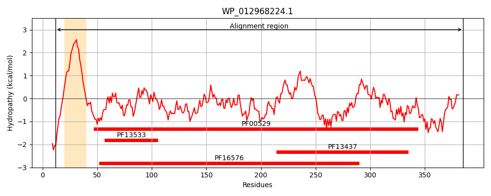
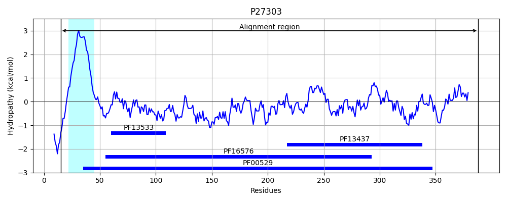
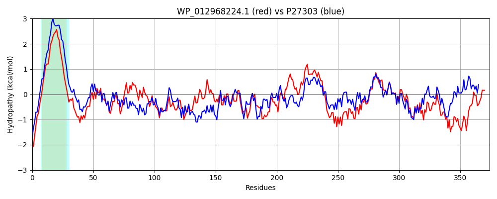

Hit Accession: P27303
Hit TCID: 8.A.1.1.1
Hit Description: gnl|BL_ORD_ID|9614 gnl|TC-DB|P27303|8.A.1.1.1 MULTIDRUG RESISTANCE PROTEIN A - Escherichia coli.
Mach Len: 374
e:0.000000
Query TMS Count : 1
Hit TMS Count: 1
TMS-Overlap Score: 1.050000
Predicted Substrates:None
BLAST Alignment:
Score: 823 , Bit scores: 321 bits, E-value: 1.1e-107, Alignment length: 374, Percentage identity: 45
Query: 12 KRPGKRTRNFAILLLILILAAGGCLAWYLLYARYYESTDDAYVNGNQVTLTPQITGTVTQVTVDEGDYVEKGQPLVLLDPSDTAIALQQAEANLASTVRQVRGLYSTADNYRAQVAAKKVALQTAKSDYLRREKIVSSGAIAVEDLAHYRDAVTSAQSDLLAAEQALKTNQAMVDDTVVDNHPEVKTAVATLRQRYLDNSRSTIVAPVSGYVAKRAVQLGMRVTSGTTLLAIVPLNEVWVDANFKESQMQNMRIGQKVELNADLYGDNVKYHGTIESLGIGTGSAFSLLPAQNASGNWIKIVQRLPVRITLDPHDMQKHPLRVGLSMNAEVDIRNQGGHLLPQKTVEQPRFRTDVYETPMEAADKLVAKILHDN 385
K+ GKR R +L L+ I+ A ++ L R++E TDDAYV GNQ+ + Q++G+VT+V D D+V++G LV LDP+D A ++A+ LAS+VRQ L + +A + +K+AL A+SDY RR + ++ I E+L H RDAVTSAQ+ L A Q NQAM+ T +++ P V+ A +R +L R+ I++P++GYV++RAVQ G +++ T L+A+VP +WVDANFKE+Q+ NMRIGQ V + D+YGD+VKY G + L +GTGSAFSLLPAQNA+GNWIK+VQRLPVRI LD ++++PLR+GLS V+ N+ G +L K P + E + +KL+ I+ N
Sbjct: 15 KKSGKRKRLLLLLTLLFIIIAVAIGIYWFLVLRHFEETDDAYVAGNQIQIMSQVSGSVTKVWADNTDFVKEGDVLVTLDPTDARQAFEKAKTALASSVRQTHQLMINSKQLQANIEVQKIALAKAQSDYNRRVPLGNANLIGREELQHARDAVTSAQAQLDVAIQQYNANQAMILGTKLEDQPAVQQAATEVRNAWLALERTRIISPMTGYVSRRAVQPGAQISPTTPLMAVVPATNMWVDANFKETQIANMRIGQPVTITTDIYGDDVKYTGKVVGLDMGTGSAFSLLPAQNATGNWIKVVQRLPVRIELDQKQLEQYPLRIGLSTLVSVNTTNRDGQVLANKVRSTPVAVSTAREISLAPVNKLIDDIVKAN 388 | Protein Hydropathy Plots: |
|---|
|  |  |
Pairwise Alignment-Hydropathy Plot:
|
|---|
|  |